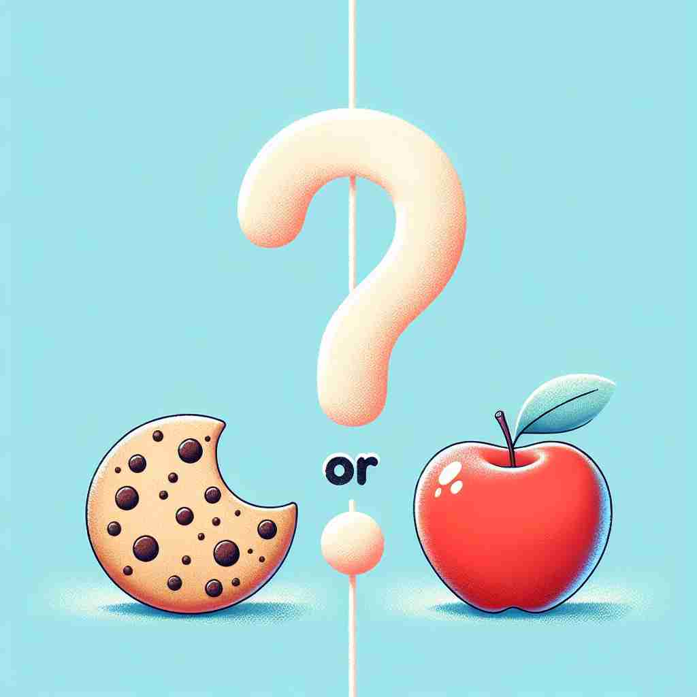

💬 Would you like coffee or tea?

💬 Would you like coffee or tea at the party?
💬 You can play outside or inside.

💬 Would you like a cookie or apple?
🔈 [ɔː]
🗝️ conj. used to link alternatives
🖼️ 在一家咖啡馆，一位顾客正在点餐。服务员问道：'您要咖啡还是茶？' 顾客微笑着说：'咖啡。'这个场景展现了'or'用来连接两种选择。
🔍 'Or' 的核心含义是提供选择或替代方案。无论是在选择、解释、结果预测还是表达不确定性时，'or' 都在引导我们考虑不同的可能性。将 'or' 想象成一个路标，指向多条可选的道路，这样可以帮助你更好地理解和记忆它的各种用法。
💬 Would you like coffee or tea?
💬 Would you like coffee or tea at the party?
💬 You can play outside or inside.
💬 Would you like a cookie or apple?
🌳 "or" 是一个连接词，用于连接两个或多个选择。其起源于古英语中的 "oþþe"。在现代英语中，它作为连词用于表示选择关系。
💡 可以将 "or" 看作是两条或多条路径之间的 "或者" 选择，帮助记忆时考虑其作为选择标志的功能。
🗝️ conj. used to introduce an alternative name or term
🖼️ 在一个科学课堂上，老师提到H2O，然后补充道：'H2O, or water, is essential for life.'这个场景展示了'or'用来引入替代名称。
💬 The common cold, or upper respiratory infection, is usually harmless.
❓ 提供另一种选择的名称
🗝️ conj. used to introduce a synonym or explanation of a preceding word or phrase
🖼️ 在一个语言学讲座中，演讲者谈到一个词，之后说：'Synonym, or a word with a similar meaning, enhances vocabulary learning.'这个场景呈现了'or'用来引入同义词或解释。
💬 The result was unsatisfactory or not good enough.
❓ 引入同义词或解释
🗝️ conj. otherwise (used to introduce the consequences of something not being done or not being the case)
🖼️ 在一个警告标志上写着：'Please wear a helmet, or you may get injured.'这个场景展示了'or'用来引出不执行某事的后果。
💬 Hurry up, or we'll be late.
❓ 引入另一种可能的结果
🗝️ conj. used to express an approximation or uncertainty
🖼️ 在一个聚会上，有人问另一个人：'有多少人参加？'对方回答：'大概20 or 30人吧。'这个场景展示了'or'用来表达大约或不确定。
💬 There were five or six people in the room.
❓ 表示大约或不确定性
🗝️ conj. used to connect two or more alternative conditions
🖼️ 在一个郊游计划中，团队负责人说：'如果明天天气好，我们去山上，or 如果下雨，就去博物馆。'这个场景展示了'or'连接多个条件的用法。
💬 You can contact me by phone or by email.
❓ 连接多个可能的条件